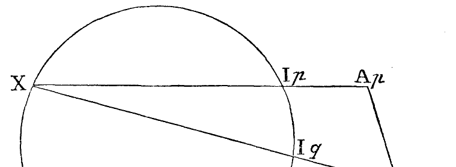

Supplementary Chapter, Section VII: General Theory of Associated Figures¶
John Casey — Supplementary Chapter on the Recent Elementary Geometry of the Triangle (5th ed., 1888, pp. 223–230)
f. 0249 · p. 223
Note on Historical Priority (f. 0249, p. 223).¶
In a note added for the 5th Edition, Casey acknowledges two memoirs on the Harmonic Polygon published after his 4th-edition note: one by MM. Neuberg and Tarry (Congress of Nancy, 1886, Association Française pour l’Avancement des Sciences), and one by the Rev. T. C. Simmons (Proceedings of the London Mathematical Society, April, 1887), remarking that—apart from the demonstration of Prop. 2, the enunciation of Prop. 7, and Prop. 13—the rest of Section VII was originally derived.
SECTION VII.¶
GENERAL THEORY OF ASSOCIATED FIGURES.¶
Def. I.—If any point $X$ in the circumference of a circle $Z$ be joined to $n$ fixed points $I_1, I_2, \dots, I_n$, on the same circumference, and portions $I_1 A_1, I_2 A_2, \dots, I_n A_n$ be taken on the joining lines in given ratios $d_1, d_2, \dots, d_n$, and all measured in the same direction with respect to $X$, a system of figures directly similar, described on $I_1 A_1, I_2 A_2, \dots, I_n A_n$, is called an associated system.


Def. II.—The points $I_1, I_2, \dots, I_n$ are called the invariable points of the system.
f. 0250 · p. 224Dem.—Let the figures be $F_1, F_2, \dots, F_n$, and $I_p, I_q$ any two invariable points, $A_p, A_q$ the corresponding points of $F_p, F_q$ taken on the lines $XI_p, XI_q$. Hence the second intersection of the circle $Z$ with the circumcircle of $\triangle X A_p A_q$ is the centre of similitude of $F_p, F_q$. Hence the centre of similitude of each pair lies on $Z$, the circle of similitude of the system (Def. III).
f. 0251 · p. 225Perspective Centres & Tarry’s Line (Props. 2–6, ff. ``0250–0252``). Any $n$ homologous points are in perspective with the invariable points (Prop. 2); any $n$ homologous lines $L_1, \dots, L_n$ meet pairwise in $\binom{n}{2}$ intersections whose joins to the perspective centre $K$ (Def. IV) pass through the centres of similitude (Prop. 3). If $n+1$ points $A_1, \dots, A_{n+1}$ yield homologous segments $A_1 A_2, \dots, A_n A_{n+1}$, the broken line $A_1 A_2 \dots A_{n+1}$ is called a Tarry’s Line (or Tarry’s Polygon when closed, Def. V).
f. 0253 · p. 227Inversion, Brianchon’s Hexagon & Symmedian Conics (Exercises 1–30, ff. ``0254–0256``, pp. 228–230). Concluding Section VII with thirty research exercises, Casey unifies three directly similar figures $F_1, F_2, F_3$ with Brianchon's hexagon, Brocard's circle, Steiner's point $S_t = X(99)$, Tarry's point $T_r = X(98)$, and homographically divided circle chords possessing invariable points, Brocard angles, and Brocard circles.